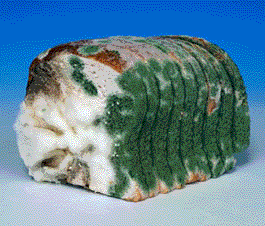

Open Says Me!
Drupal 7 Authentication with LDAP
Presented by Bill Crum / Chattanooga State Community College / wacrum@gmail.com
Drupal Camp Chattanooga 2015
LDAP Defined
The Lightweight Directory Access Protocol (LDAP) is an open, vendor-neutral, industry standard application protocol for accessing and maintaining distributed directory information services over an Internet Protocol (IP) network.
Source: Wikipedia
LDAP Defined

LDAP Defined

LDAP Defined

Source: Wikipedia
LDAP at Chattanooga State
Single Login Across Services
LDAP at Chattanooga State Benefits of Using LDAP Auth For Web Applications
(We'll talk about Roles later on)
User Authentication: The Old Way
User Authentication: The Newer, Easier Way
if(isset($_SESSION['username'])){
$ldap = ldap_connect("dcdmz.cstcc.lan,ou=users,ou=staff,dc=cstcc,dc=lan");
$sub = "cstcc\\";
if($bind = @ldap_bind($ldap, $sub.$_SESSION['username'], $_SESSION['password']) && $_SESSION['password']<>'') {
$_SESSION['type'] = getSessionInfo($_SESSION['username']);
header("Location: access_request.php");
}
}
User Authentication: The Drupal Way

It's Baked In! Well...sort of...Er...Ready to Bake!
Drupal and LDAP
Let the Journey Begin!
Setting up LDAP can be a pain!
Getting Geared Up
Prerequisites

...a good relationship with your IT Department
Helpful Tools
Drupal and LDAP Module
Installation
Download LDAP Module from Drupal.org
Copy to sites/all/modules and extract
- or -
Use Drush! 
$ drush en ldap -y
Live Demonstration
LDAP Test SiteQuestions, comments, discussion
E-mail: wacrum@gmail.com
Presentation on GitHub https://goo.gl/ukmOG1